タップするとそのまま電話発信できます。
タップしてズームレベルを切り替えられます。サウス・ヤラ（10B Surrey Rd）に特化した高精細ベクター地図です。
Googleマップアプリでピンの正確な位置を開いたり、外出先から宿泊先までの徒歩・電車・トラムでの帰り道ルートをワンタップで検索できます。
サウス・ヤラはメルボルン屈指の美しさと治安を誇る洗練されたエリア。並木道が続き、ベビーカーの押しやすさも抜群です。
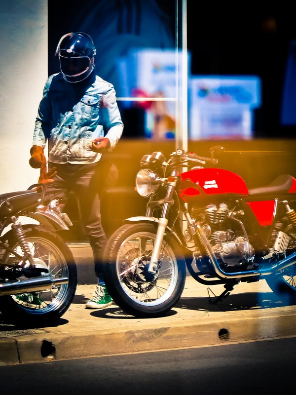
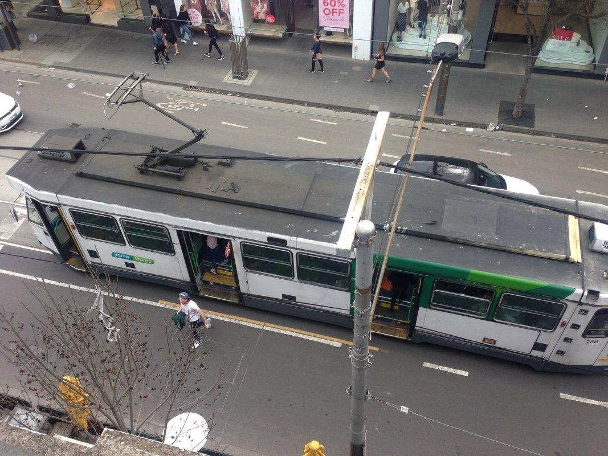
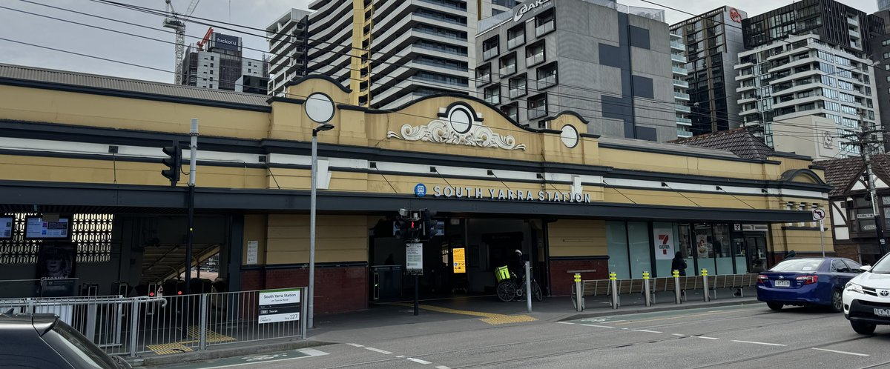
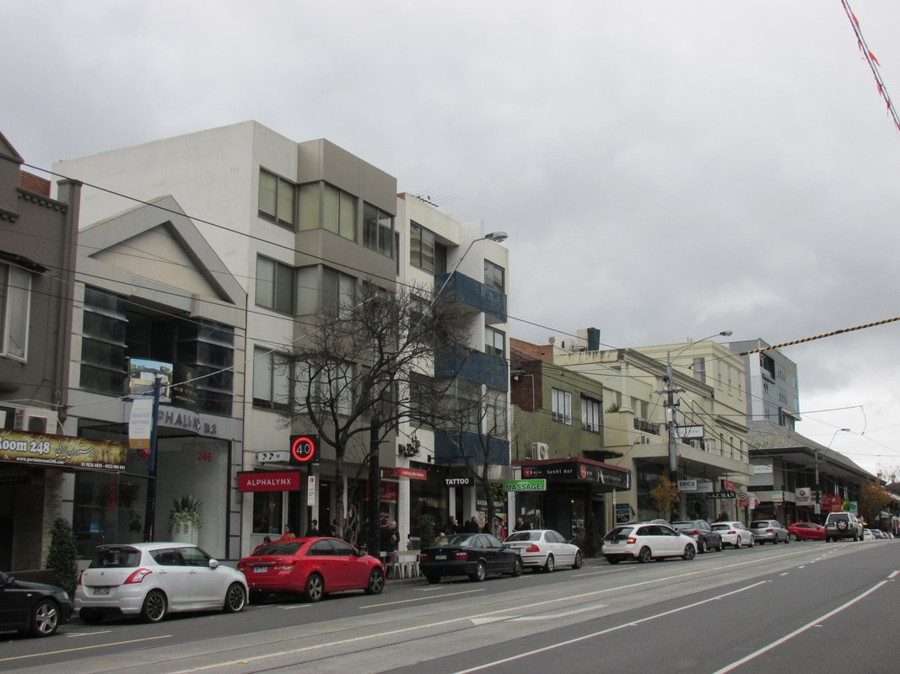
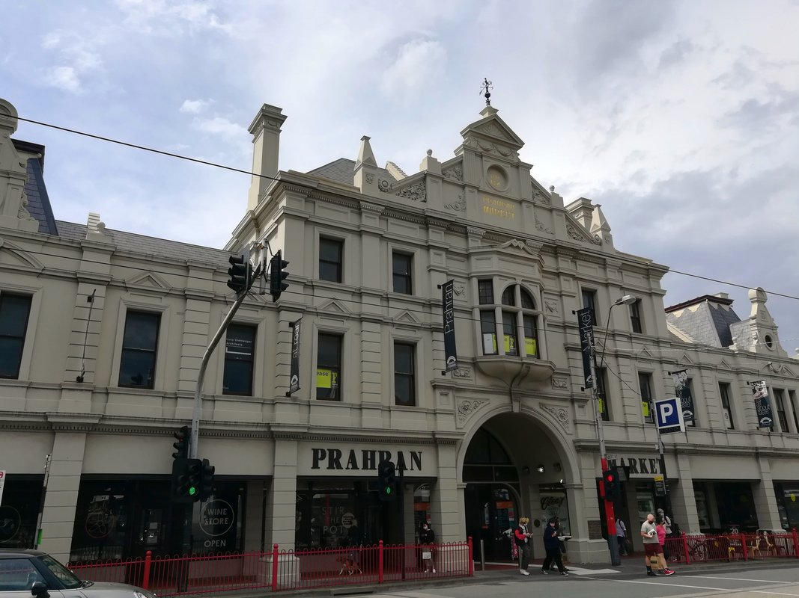
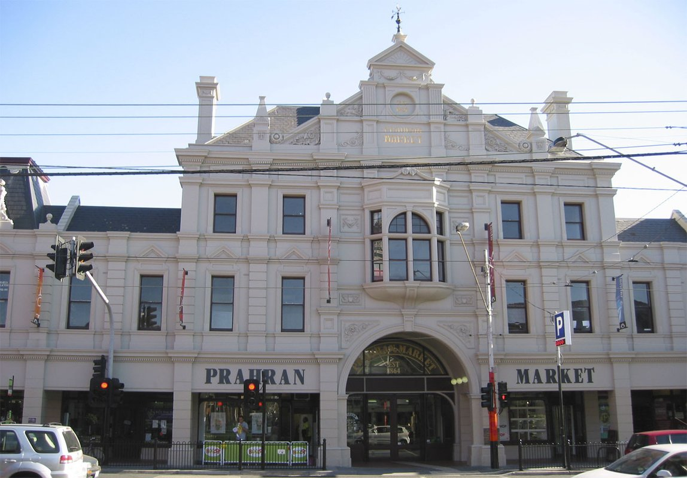
10B Surrey Roadから西へフラットな道を徒歩6分。朝摘みベリーやバナナ、無添加ソーセージ、焼きたてクロワッサンが手に入ります。
- 子ども用プレイエリア（Market Square）: 中庭に人工芝と滑り台遊具があり、大人がコーヒーを飲む間に子どもが安心して遊べます。
- キッズフレンドリー: 通路が広くベビーカーで楽々通行可能。授乳室・オムツ替え台完備。
- 営業日: 火・木・金・土・日（※月・水は定休日なのでご注意ください）。

- 🚆 電車（サウスヤラ駅）: 徒歩10分またはトラム利用。フリンダース駅（Flinders St）まで快速でわずか5〜7分！日中は2〜3分間隔で電車が来るため時刻表不要。
- 🚋 トラム72番（Malvern Rd）: 宿から南へ徒歩3分。Swanston Stを通ってメルボルン都心中心部・州立図書館へ直通。
- 🚋 トラム78番（Chapel St）: 宿から西へ徒歩3分。南北を縦断し、セントキルダ海岸まで15分で直通！
- 🚋 トラム58番（Toorak Rd）: 宿から北へ徒歩6分。王立植物園、都心ウィリアム通り、そしてロイヤルチルドレンズ小児病院（RCH）・メルボルン動物園まで乗り換えなし1本！
- 👶 運賃ルール: 4歳以下の子どもは電車・トラムともに完全無料！保護者はmyki（またはGoogle Wallet）をタップして乗車します。
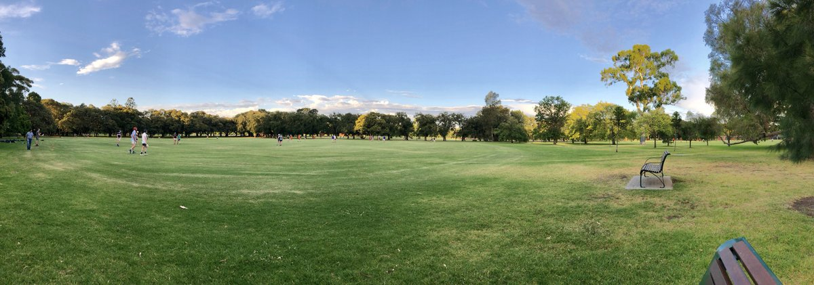

- Surrey Road Park（徒歩1分）: 宿の目の前！フェンス付きで安心な滑り台、ブランコ、スプリング遊具。朝起きてすぐやお風呂前のちょっとした外遊びに最適。
- Princes Gardens（徒歩6分）: チャペル通り西側。芝生広場とプレイグラウンド、さらにプラーラン市民温水プール（Prahran Aquatic Centre）が併設。
- Fawkner Park（徒歩12分 / トラム72番で3分）: エルム並木が美しい超巨大公園。幼児専用の囲い付きプレイグラウンドや木製船型遊具、無料BBQ台、公衆トイレ完備。
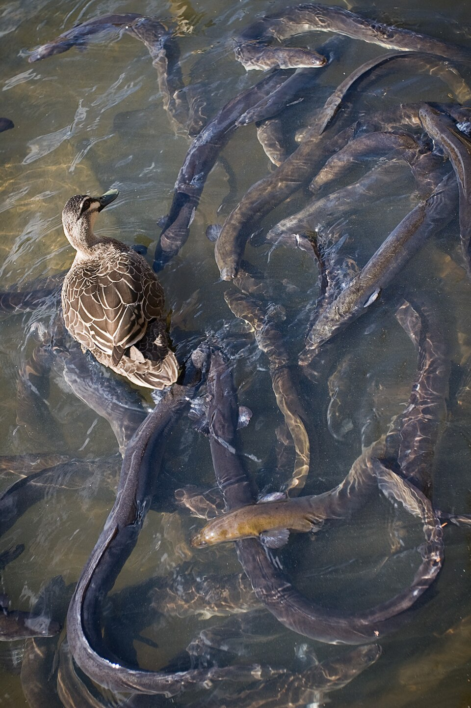

サウスヤラからトラム58番で北へわずか5分（徒歩でも15分）。子どもが自然と五感で触れ合える世界的に有名な子ども専用ガーデンです。
- 水遊びスプリンクラー: 暖かい日は地面からミストや水が吹き出し大はしゃぎ（着替え・ミニタオル必携）。
- 泥遊び・竹林の迷路: 竹藪のトンネルやツリーハウス、登れる巨木。
- 入園料: 完全無料。水曜〜日曜およびビクトリア州学休期間にオープン。

- プラーラン市場（徒歩6分）: 最高の肉・魚・オーガニック野菜・パン・果物はここで。
- Coles Prahran & Woolworths Prahran（徒歩8分）: Prahran Square地下に大型店舗が揃い、深夜まで営業。牛乳、ヨーグルト、オムツ、離乳食、お菓子が一挙に揃います。
- Big W（Vogue Plaza内 / 徒歩10分）: チャペル通り沿い。激安の子ども服、パジャマ、水着、絵本、おもちゃが何でも揃い長期滞在の強い味方。
- Chemist Warehouse South Yarra（徒歩5分）: 巨大ドラッグストア。日焼け止め、ベビーソープ、子供用解熱シロップ（Panadol）が格安。


温めたスチームミルクのふわふわ泡にココアパウダーを振り、マシュマロを添えたキッズ専用ドリンク（無料〜$2程度）。サウスヤラのどのカフェでも「Flat white and babyccino please!」と頼めば喜んで作ってくれます。テラス席が多くベビーカーでも気兼ねなく入れます。
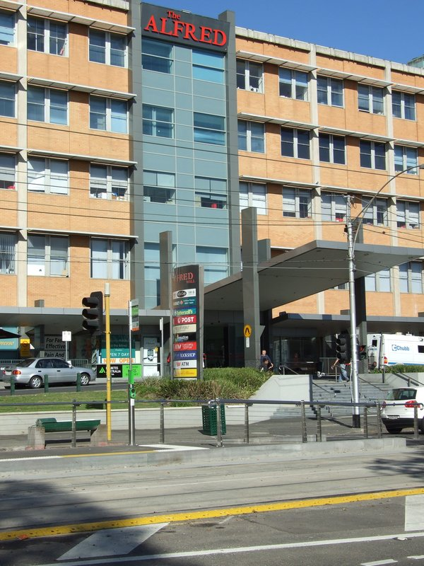

夜間の急病やケガでも、サウスヤラ周辺はメルボルン屈指の医療集積地です。
- The Alfred Hospital（24h救急救命センター）: 宿から車で4分 / トラム72番で直通。ビクトリア州最大の総合救急病院。
- The Royal Children's Hospital (RCH): 南半球最高峰の小児専門病院へ、トゥーラック通りから**トラム58番で乗り換えなし1本直通**！24時間小児ER受付。
- 常備薬: 薬局で「Children's Panadol（アセトアミノフェン解熱シロップ）」が処方箋なしですぐ購入可能。

- 🚕 Uber / タクシー（推奨）: 空港から高速CityLink〜Monash Freeway経由で約30〜35分（料金$65〜$85前後）。スーツケースやベビーカー、小さなお子様連れならドア・ツー・ドアのタクシー/Uberが圧倒的に楽です。
- 🚆 SkyBus + 電車ルート: 空港からスカイバス（赤い2階建てバス）で都心サザンクロス駅まで25分。そこから電車に乗り換え3駅（約7分）でサウスヤラ駅到着。

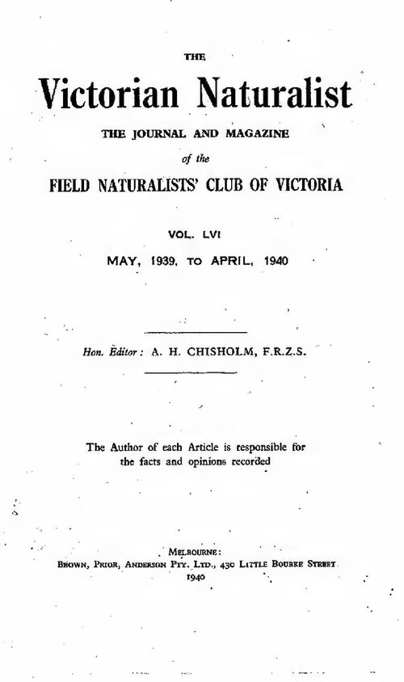
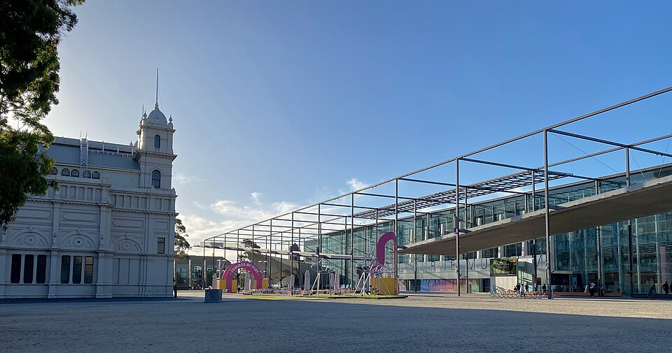

大迫力の巨大恐竜骨格や生きた熱帯雨林温室。幼児専用の「Pauline Gandel Children's Gallery」はブロック遊びや砂場・発掘体験ができます。高校生以下入場無料！

宿からチャペル通りの**トラム78番に一本乗るだけ**で海の目の前へ！遠浅で波が穏やかなビーチ、名物遊園地Luna Park、夕暮れに桟橋に帰ってくる野生のフェアリーペンギンが見られます。

サウスヤラ駅から電車でフリンダース駅へ5分、そこからヤラ川沿いを散歩してすぐ。巨大ワニ、エイ、サメの海中トンネル、雪山エリアのペンギンが目の前に！雨の日の定番です。

- 洗濯（Laundromat）: 宿に洗濯機がない場合やシーツ・バスタオルを丸ごと乾燥させたい時は、チャペル通りやマルバーン通り沿いのコインランドリーへ（約45分でフカフカに乾燥）。
- 紫外線対策（SunSmart）: 南半球の紫外線は強烈。曇りの日でも外出時は帽子＋キッズ用日焼け止め（現地薬局のCancer Council Kids推奨）を習慣に。
- 「1日に四季がある」気候対策: メルボルンは日中30℃でも夕方に冷たい風が吹き15℃まで急降下することがあります。外出時は必ず薄手のウインドブレーカーやカーディガンを携帯してください。